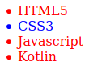
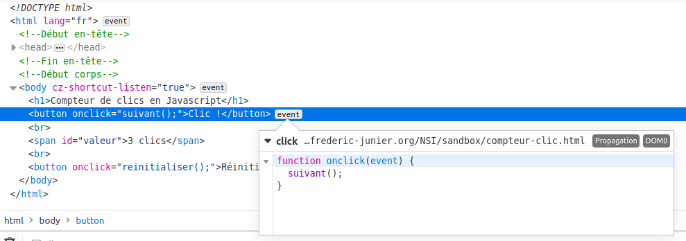
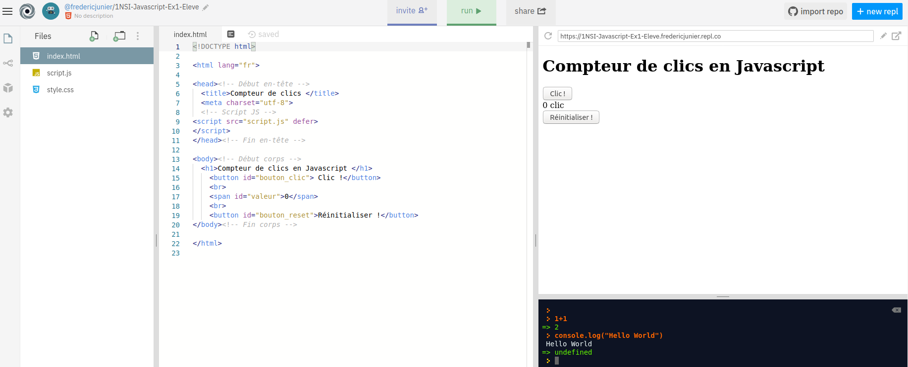
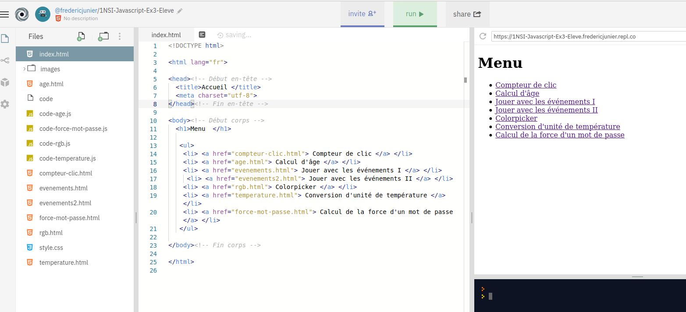
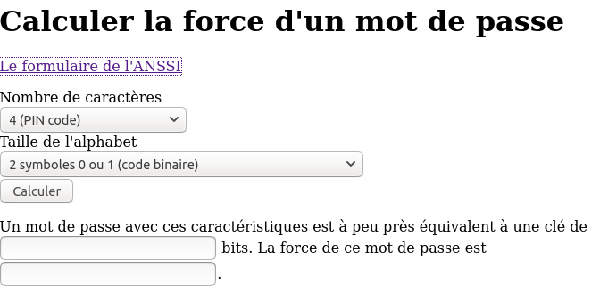
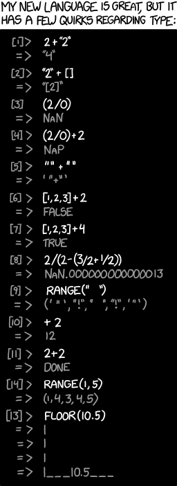

- Crédits
- Javascript et la programmation événementielle côté client
- Premiers pas dans la console Javascript
- Approfondissement : rédaction de scripts et gestionnaires d’événements
- Travaux pratiques
- QCM E3C2
Crédits⚓︎
Ce cours est largement inspiré du chapitre 29 du manuel NSI de la collection Tortue chez Ellipse, auteurs : Ballabonski, Conchon, Filliatre, N’Guyen. J’ai également consulté le prepabac Première NSI de Guillaume Connan chez Hatier, la documentation en ligne de la fondation Mozilla https://developer.mozilla.org/fr/docs/Apprendre/JavaScript et le tutoriel de w3schools https://www.w3schools.com/js/default.asp.
Javascript et la programmation événementielle côté client⚓︎
Point de cours 1
Dans le chapitre précédent, on a présenté des exemples de pages Web dynamiques générées par des programmes en PHP ou Python. Chaque mise à jour de la page nécessite donc un nouveau cycle requête/réponse entre le client et le serveur. C'est indispensable s'il s'agit de modifier l'état d'une ressource côté serveur (une base de données par exemple), mais les changements peuvent n'être que temporaires et n'affecter que des éléments de la page côté client. C'est le cas de l'exemple déjà traité en PHP de la conversion d'unité pour une mesure de température.
Javascript est un langage interprété répondant à ce besoin, qui s'exécute dans le navigateur du client. Javascript s'est imposé depuis son apparition en 1995 dans le navigateur Netscape comme le principal langage de développement Web en frontend (côté client) et depuis une dizaine d'années, sa variante Node.js concurence les langages de développement backend (côté serveur) comme PHP ou Python.
Une page Web moderne, reçue par un client, comporte au moins trois composants logiciels :
- HTML pour la structure du document.
- CSS pour le paramétrage de l'apparence des éléments et leur positionnement.
- Javascript pour la définition de programmes qui vont réagir à des événements déclenchés par l'utilisateur de la page et modifier la structure de données de la page ( éléments HTML et styles CSS) à travers l'API1 nommée DOM2. Le DOM est une représentation de l'ensemble de la structure de la page Web sous la forme d'un arbre : les noeuds sont les éléments HTML et ils ont une liste de propriétés : contenu, style, événements associés ... L'inspecteur des outils de développement, accessibles avec la touche
F12dans un navigateur, permet de visualiser et modifier les propriétés des éléments du DOM.
L'environnement d'exécution d'un code Javascript est confiné à l'onglet de la page Web où il est chargé. Pour des raisons de sécurité il ne doit pas interagir avec d'autres pages ou des ressources du poste client. Par ailleurs, si on recharge la page auprès du serveur, l'environnement Javascript est réinitialisé et les modifications de la page effectuées par un code Javascript ne sont pas répercutées sur la page source disponible sur le serveur.
Le schéma ci-dessous illustre le fonctionnement du Javascript qui correspond à un paradigme de programmation événementielle.
{kind=link}
Premiers pas dans la console Javascript⚓︎
Point de cours 2
Compléter ce tableau sur les opérateurs en Javascript à partir de la page https://developer.mozilla.org/fr/docs/Web/JavaScript/Guide/Expressions_et_Op%C3%A9rateurs.
| Opérateurs | Description |
|---|---|
= |
|
* |
|
/ |
|
** |
|
== ou === |
|
!= ou !=== |
|
&& |
|
|| |
|
! |
Réponse
| Opérateurs | Description |
|---|---|
= |
affectation |
* |
multiplication |
/ |
division |
** |
exponentiation |
== ou === |
égalité |
!= ou !=== |
différence |
&& |
et logique |
|| |
ou logique |
! |
négation logique |
Exercice 1
Ouvrir un nouvel onglet dans un navigateur Web.
-
Ouvrir la console Javascript dans la fenêtre des outils de développement avec
F12ouCTRL + SHIFT + Ksous Firefox. On va exécuter de façon interactive, une séquence d'instructions Javascript pour présenter quelques constructions élémentaires et propriétés du langage. Chaque instruction pourra modifier l'état du DOM et donc le rendu graphique de la page Web. -
On commence par quelques manipulations de variables et calculs :
>>> let a = 1 undefined >>> (a * 3 + 1) ** 2 / 5 - 1 2.2 >>> (a * 3 + 1) ** 2 // commentaire ! 16 >>> let b = "Hello" undefined >>> b + " World" "Hello World" >>> typeof(a) "number" >>> typeof(b) "string" >>> a = b + a "Hello1" >> typeof(a) "string"- Barrer les propositions fausses : en Javascript est à typage (fort | faible) et (dynamique | statique) et une variable égale à 5 se déclare avec (let a = 5 | a = 5).
Réponse
en Javascript est à typage faible et dynamique et une variable égale à 5 se déclare avec let a = 5.
-
Examinons un exemple avec une fonction, une structure conditionnelle et une boucle. Dans la console, passer en mode éditeur multiligne avec
CTRL + Bet saisir le code ci-dessous :function valabs(x){ if (x < 0){ return -x; } else { return x; } } for (let i = -4; i < 5; i = i + 1){ if (valabs(i) > 2){ alert(i); } else { console.log(i); } }-
Barrer les propositions fausses : en Javascript, les blocs d'instructions sont délimités par (l'indentation | des accolades), les fonctions sont déclarées avec le mot clef (def | function) et une boucle inconditionnelle sur les entiers entre 1 et 10 commence par l'instruction ( for k in range(1, 11) | for (let k = 1; k < 11; k = k + 1) )
Réponse
en Javascript, les blocs d'instructions sont délimités par des accolades, les fonctions sont déclarées avec le mot clef function et une boucle inconditionnelle sur les entiers entre 1 et 10 commence par l'instruction for (let k = 1; k < 11; k = k + 1)
-
Barrer les propositions fausses : la fonction
alertaffiche son paramètre dans (une fenêtre pop-up | la console) tandis que la fonctionconsole.logaffiche son paramètre dans (une fenêtre pop-up | la console).Réponse
la fonction
alertaffiche son paramètre dans une fenêtre pop-up tandis que la fonctionconsole.logaffiche son paramètre dans la console.
-
Exercice 2
Javascript dispose de toutes les constructions permettant de progammer les mêmes algorithmes qu'en Python, mais s'il a été inventé par les développeurs de Netscape c'est pour manipuler les éléments HTML, à travers l'interface du DOM. Il existe plusieurs façons de capturer un élément HTML, la plus simple s'il s'agit d'un élément particulier est l'accès par son identifiant unique id (à condition qu'il soit défini).
Ouvrir un navigateur Web et charger la page https://frederic-junier.org/NSI/sandbox/bac.html. Le code source HTML de la page est donné ci-dessous :
<!DOCTYPE html>
<head>
<title> "Bac à sable" </title>
<meta charset="utf-8">
<body>
<ul id="langages">
<li> HTML </li>
<li> CSS </li>
</ul>
</body>
</html>
Alternative : utilisation de Capytale
Une alternative pour traiter cet exercice : ouvrez l'activité Capytale en suivant ce lien.
Dans ce cas, le code HTML est saisi dans la fenêtre de gauche et vous saisirez le code Javascript dans la fenêtre de droite.
Par exemple , pour la question 1, vous saisirez ce code :
let list = document.getElementById("langages");
list.style.color = "red";
let item1 = list.children[0];
item1.innerHTML = 'HTML5';
Pour la question 2, vous compléterez ainsi :
let item3 = document.createElement("li")
list.appendChild(item3)
item3.innerHTML = "Javascript"
Et pour la question 3 :
function apparition(){
list.style.visibility = "visible";
}
function disparition(){
list.style.visibility = "hidden";
}
list.onmouseover = disparition ;
//le symbole ; est le séparateur d'instruction en Javascript
list.onmouseleave = apparition ;
list.onclick = function() { alert("Clic !") ; } ; //définition d'une fonction anonyme
-
Saisir successivement les instructions ci-dessous dans la console, observer ce qu'il se passe dans la page étape par étape. Caractériser le rôle de chaque instruction puis saisir des instructions qui permettent de modifier le contenu HTML et le style du second item de la liste.
>>> let list = document.getElementById("langages") undefined >>> list.style.color = "red" "red" >>> let item1 = list.children[0] undefined >>> item1 <li> >>> item1.innerHTML = 'HTML5' "HTML5"
\ -
Saisir successivement les instructions ci-dessous dans la console, observer ce qu'il se passe dans la page étape par étape. Caractériser le rôle de chaque instruction puis saisir des instructions qui permettent de rajouter un quatrième item à la liste dont le contenu est Kotlin.
>>> let item3 = document.createElement("li") undefined >>> list.appendChild(item3) <li> >>> item3.innerHTML = "Javascript" "Javascript" -
Passer la console en mode mutliligne avec
CTRL + Bpuis saisir et exécuter le code ci-dessous. Survoler la liste ou cliquer dessus avec la souris et observer ce qui se passe dans la page. Caractériser le rôle de chaque instruction en vous appuyant sur la lecture de l'article https://developer.mozilla.org/fr/docs/Web/API/GlobalEventHandlers/onclick.function apparition(){ list.style.visibility = "visible"; } function disparition(){ list.style.visibility = "hidden"; } list.onmouseover = disparition ; //le symbole ; est le séparateur d'instruction en Javascript list.onmouseleave = apparition ; list.onclick = function() { alert("Clic !") ; } ; //définition d'une fonction anonyme -
Recharger la page avec
F5. L'environnement Javascript a-t-il été conservé ?
Approfondissement : rédaction de scripts et gestionnaires d’événements⚓︎
Exemple 1
Ouvrir un navigateur Web et accéder à la page https://frederic-junier.org/NSI/sandbox/compteur-clic.html.
On donne ci-dessous le code source de la page Web.
<!DOCTYPE html>
<html lang="fr">
<head><!-- Début en-tête -->
<title>Compteur de clics </title>
<meta charset="utf-8">
<!-- Début script JS -->
<script>
let compteur = 0;
function suivant(){
compteur = compteur + 1;
let v = document.getElementById("valeur");
if (compteur <= 1) {
v.innerHTML = compteur + " clic";
}
else {
v.innerHTML = compteur + " clics";
}
}
function reinitialiser(){
compteur = 0;
let v = document.getElementById("valeur");
v.innerHTML = compteur + " clic";
}
</script> <!-- Fin script JS -->
</head><!-- Fin en-tête -->
<body><!-- Début corps -->
<h1>Compteur de clics en Javascript </h1>
<button onclick="suivant();">Clic !</button>
<br>
<span id="valeur">0</span>
<br>
<button onclick="reinitialiser();">Réinitialiser !</button>
</body><!-- Fin corps -->
</html>
- On peut interagir avec la page en cliquant sur le bouton Clic ! puis réinitialiser le compteur en cliquant sur le bouton Réinitialiser.
-
Ouvrir l'onglet inspecteur dans la fenêtre des outils de développement et afficher la structure de la page comme ci-dessous.
-
Repérer l'étiquette
eventattachée au bouton de contenu Clic ! et déplier son contenu.

- Pour cet élément
button, l'attributonclick="suivant()"a défini une fonction Javascriptfunction onclick(event) {suivant();}qui prend en paramètre un événement utilisateur (ici un click) et réagit en appelant la fonctionsuivant. La fonctionsuivantest appelée gestionnaire d'événement. - Le code de la fonction
suivantse trouve dans la balise<script>. Placée dans l'en-tête, celle-ci rassemble tout le code Javascript chargé dans la page. -
On a vu précédemment que la fonction est appelée dès qu'un événement
clickse produit sur le premier élément<button>. En examinant le code desuivant, on voit qu'un lien est d'abord créé entre l'élément<span>d'identifiant"valeur"et une variable Javascript à l'aide d'une méthode DOM par l'instruction :let v = document.getElementById("valeur");- Ensuite on peut manipuler l'élément HTML et modifier son contenu avec :
v.innerHTML = compteur + " clic";-
La variable
compteurest définie en dehors desuivantcar c'est une variable globale. Les variables globales sont essentielles en Javascript, c'est l'un des défauts du langage. -
Identifier et analyser de même le gestionnaire d'événement
clickqui est attaché au second élément<button>.
Réponse
-
Pour cet élément
button, l'attributonclick="reinitialiser()"a défini une fonction Javascriptfunction onclick(event) {reinitialiser();}qui prend en paramètre un événement utilisateur (ici un click) et réagit en appelant la fonctionreinitialiser. La fonctionreinitialiserest appelée gestionnaire d'événement. -
Le code de la fonction
reinitialiserse trouve dans la balise<script>. Placée dans l'en-tête, celle-ci rassemble tout le code Javascript chargé dans la page. -
On a vu précédemment que la fonction est appelée dès qu'un événement
clickse produit sur le premier élément<button>. En examinant le code dereinitialiser, on voit qu'un lien est d'abord créé entre l'élément<span>d'identifiant"valeur"et une variable Javascript à l'aide d'une méthode DOM par l'instruction :let v = document.getElementById("valeur"); -
Puis le contenu HTML de cet élément est modifié par la même méthode que la fonction
suivant:v.innerHTML = compteur + " clic";
Exemple 2
Ouvrir un navigateur Web et accéder à la page https://replit.com/@fredericjunier/1NSI-Javascript-Ex1-Eleve#index.html.
On arrive dans un environnement de développement Web en HTML/CSS/Javascript sur la plateforme https://repl.it.

\Alternative : utilisation de Capytale
Une alternative pour traiter cet exercice : ouvrez l'activité Capytale en suivant ce lien.
-
L'interface se divise en trois zones :
-
À droite la fenêtre d'affichage du site et en-dessous une console Javascript.
-
Au centre l'éditeur avec le fichier courant.
-
À gauche l'explorateur de fichiers avec une séparation des trois composants logiciels nécessaires à l'affichage dans la fenêtre en haut à droite :
- la structure du document en HTML dans
index.html - le code Javascript dans
script.js - la feuille de style CSS dans
style.css
Par rapport à l'exemple précédent, le code Javascript est donc clairement séparé du code HTML. Le navigateur du client reçoit d'abord le code HTML. Pour charger le Javascript, on procède comme pour une feuille de style CSS en plaçant une balise de lien dans l'en-tête du fichier HTML :
<script src="script.js" defer> </script>L'attribut
srcdonne le chemin vers le fichier contenant le code Javascript et l'attributdeferprécise que le chargement du Javascript doit se faire après que la page HTML soit totalement chargée. En effet, Javascript peut modifier la page à travers l'interface DOM, donc il faut ordonnancer le chargement des différentes ressources. Des anciennes pratiques recommandaient ainsi de placer les balises<script>à la fin du code HTML. Des attributs commedeferpermettent de gérer plus finement les priorités, surtout lorsque plusieurs scripts Javacript sont appelés. - la structure du document en HTML dans
-
On donne ci-dessous le code du fichier
script.js:
let compteur = 0;
function suivant(){
compteur = compteur + 1;
let v = document.getElementById("valeur");
if (compteur <= 1) {
v.innerHTML = compteur + " clic";
}
else {
v.innerHTML = compteur + " clics";
}
}
function reinitialiser(){
compteur = 0;
let v = document.getElementById("valeur");
v.innerHTML = compteur + " clic";
}
let bouton_clic = document.getElementById("bouton_clic");
bouton_clic.addEventListener("click", suivant);
let bouton_reset = document.getElementById("bouton_reset");
bouton_reset.addEventListener("click", reinitialiser);
-
Les définitions de la variable
compteuret des gestionnaires d'événementssuivantetreinitialisersont identiques à celles du code de l'exemple 1. Ce qui change est la façon dont les gestionnaires sont attachés aux boutons. Prenons le bouton de Clic !, dans l'exemple 1 la liaison se faisait dans la balise HTML avec l'ajout de l'attributonclick = "suivant()"alors qu'ici la liaison est déportée dans le fichierscript.jsavec ://récupération de l'élément <button> ciblé par son identifiant et la méthode DOM let bouton_clic = document.getElementById("bouton_clic"); //ajout sur cet élément du gestionnaire d'événement suivant pour l'événement click bouton_clic.addEventListener("click", suivant); -
L'architecture présentée dans l'exemple 2 est préférable car elle respecte un principe de séparation des composants logiciels selon leur fonctionnalité et facilite donc la lisibilité, la factorisation et la maintenance du code.
-
Il faut noter deux autres différences entre les méthodes des exemples 1 et 2 :
- les parenthèses après
suivant(qui est une fonction) sont présentes dans<button onclick = "suivant()">mais absentes dansbouton_clic.addEventListener("click", suivant); - la liaison avec l'élément
<button id="bouton_clic"> Clic !</button>se fait dansscript.jsgrâce à l'identifiantid="bouton_clic"qui n'était pas nécessaire dans l'exemple 1 lorsque le gestionnaire était attaché directement à la balise.
- les parenthèses après
Point de cours 3
-
Javascript permet grâce à l'interface DOM d'attacher une fonction gestionnaire d'événement à un élément d'un document HTML.
Ce gestionnaire est lié à un événement, qui est une action de l'utilisateur (déplacement de la souris, pression sur une touche du clavier) ou une modification d'un autre élément du document.
Lorsque l'événement ciblé atteint l'élément surveillé par le gestionnaire, celui-ci le capture et délenche une action.
-
Pour attacher un gestionnaire d'événement nommé
gestionnaire, à un élément, nomméelement, et le lier à un événement, par exempleclick,on peut procéder de deux façons :- Méthode 1 (voir exemple 1), directement dans le code HTML :
<element id="id_element" onclick="gestionnaire()"> ... </element>- Méthode 2 (voir exemple 2), dans un fichier externe
script.js:
//la balise element doit être repérée par un id let v = document.getElementById("id_element"); v.addEventListener("click", gestionnaire); -
Il existe plusieurs méthodes pour cibler un élément HTML, nous utiliserons principalement le ciblage par identifiant unique
id:
| Type de cible | Syntaxe |
|---|---|
Identifiant unique id |
document.getElementById('id') //retourne un élément |
| Classe CSS | document.getElementByClass('classname') //retourne une liste d'éléments |
Sélecteur CSS (par exemple titre h1) |
document.querySelector('h1') //retourne une liste d'éléments |
- Dans le tableau ci-dessous on présente une sélection d' événements avec leur description et les deux façons de les lier à un gestionnaire
gest: directement dans l'élément HTMLtagou dans un fichier externe où la variablevdésigne cet élément.
| Événement | Signification | Gestionnaire interne | Gestionnaire externe |
|---|---|---|---|
click |
dispositif de pointage pressé sur l'élément | <tag onclick="gest()"> |
v.addEventListener('click', gest) |
mouseover |
dispositif de pointage déplacé sur l'élément | <tag onmouseover="gest()"> |
v.addEventListener('mouseover', gest) |
mouseout |
dispositif de pointage déplacé hors de l'élément | <tag onmouseout="gest()"> |
v.addEventListener('mouseout', gest) |
keydown |
une touche du clavier est pressée | <tag onkeydown="gest()"> |
v.addEventListener('keydown', gest) |
keydown |
une touche du clavier est relâchée | <tag onkeyup="gest()"> |
v.addEventListener('keyup', gest) |
input |
à chaque changement de valeur réalisé par l'utilisateur dans <input> ou <select> |
<tag oninput="gest()"> |
v.addEventListener('input', gest) |
Travaux pratiques⚓︎
Exercice 3
-
Ouvrir la page https://frederic-junier.org/NSI/sandbox/imc.php. Il s'agit d'une page web dynamique qui contient un formulaire de calcul d'IMC.
-
Tester le formulaire. Le script réalisant le calcul de l'IMC est-il exécuté côté client (dans le navigateur) ou côté serveur ?
-
Quelle est la méthode de transmission des paramètres du formulaire ?
Réponse
Un script PHP est exécuté côté serveur, le chemin relatif vers le script sur le serveur :
"chemin.php"est la valeur de l'attributactionde la balise<form>contenant le formulaire.<form action="imc.php" method="GET"></form>C'est la méthode GET, les paramètres sont transmis dans une chaîne de paires (clef=valeur) ajoutées à l'URL transmise au serveur. La méthode HTTP de transmission de paramètres est précisée dans l'attribut
methodde la balise<form>contenant le formulaire.<form action="imc.php" method="GET"></form><!DOCTYPE html> <!-- Script PHP d'initialisation --> <?php if (isset($_POST['masse'])) { $masse = $_POST['masse']; } elseif (isset($_GET['masse'])) { $masse = $_GET['masse']; } else { $masse = 0; } if (isset($_POST['taille'])) { $taille = $_POST['taille']; } elseif (isset($_GET['taille'])) { $taille = $_GET['taille']; } else { $taille = 0; } ?> <html lang="fr"> <!-- Début en-tête --> <head> <title> Formulaire de calcul d'IMC </title> <meta charset="utf-8"> </head> <!-- Fin en-tête --> <!-- Début corps --> <body> <h1>Calcul d'IMC</h1> <p> A propos du calcul de l'IMC : <a href="https://fr.wikipedia.org/wiki/Indice_de_masse_corporelle">page wikipedia</a>. </p> <h2> Formulaire de saisie des paramètres </h2> <form action="imc.php" method="GET"> <label for="masse">Saisie de la masse en kilogrammes : </label> <input type="number" id="masse" name="masse" value=<?php echo $masse ?> > <br> <label for="taille">Saisie de la taille en mètres : </label> <input type="number" id="taille" name="taille" step="0.01" value=<?php echo $taille ?> > <br> <button type="submit" id="bouton"> Soumettre </button> </form> <h2> Affichage du résultat </h2> <p> <?php $imc = ($masse)/($taille * $taille); ?> Votre IMC est de <?php echo $imc ?>. </p> <!-- Script PHP d'affichage de la table de multiplication --> <p> <?php if ($imc < 18){ echo "Vous êtes en sous-poids"; } elseif ($imc < 25){ echo "Votre IMC est normal"; } else { echo "Vous êtes en surpoids"; } ?> </p> </body> </html> -
-
Cette activité Capytale a pour but de réaliser un formulaire de calcul d'IMC en Javascript côté client (dans le navigateur). Une solution est proposée ci-dessous (à consulter après avoir cherché l'activité)
Réponse
<html lang="fr"> <!-- Début en-tête --> <head> <title> Formulaire de calcul d'IMC </title> <meta charset="utf-8"> <script type="text/Javascript" src="imc.js" defer="defer"> </script> </head> <body> <h1>Calcul d'IMC</h1> <p> A propos du calcul de l'IMC : <a href="https://fr.wikipedia.org/wiki/Indice_de_masse_corporelle">page wikipedia</a>. </p> <p><a href="http://frederic-junier.org/NSI/sandbox/imc.php">Lien</a> vers un formulaire de calcul d'IMC avec un script en PHP s'exécutant côté serveur : </p> <h2> Formulaire de saisie des paramètres </h2> <label for="masse">Saisie de la masse en kilogrammes : </label> <input type="number" id="masse" min="0" required> <br> <label for="taille">Saisie de la taille en mètres : </label> <input type="number" id="taille" step="0.01" required> <br> <button id="bouton" onclick="calcule_imc()"> Soumettre </button> <h2> Affichage du résultat </h2> <p> Votre IMC est de <span id="imc"></span> </p> <p id="commentaire"> </p> </body> </html>//variables globales let masse = document.getElementById("masse"); let taille = document.getElementById("taille"); let imc = document.getElementById("imc"); let commentaire = document.getElementById("commentaire"); function calcule_imc(){ imc.value = masse.value / (taille.value * taille.value); imc.innerHTML = imc.value; if (imc.value < 18){ commentaire.innerHTML = 'Vous êtes en sous-poids'; } else if(imc.value < 25){ commentaire.innerHTML = 'Votre IMC est normal'; } else { commentaire.innerHTML = 'Vous êtes en surpoids'; } } //initialisation ,valeurs par défaut au chargement de la page masse.value = 80; taille.value = 1.8; calcule_imc();
Exercice 4
Ouvrir un navigateur Web et accéder à la page https://repl.it/@fredericjunier/1NSI-Javascript-Ex3-Eleve.
On arrive dans un environnement de développement Web en HTML/CSS/Javascript sur la plateforme https://repl.it.

\La page d'accueil contient une liste de liens vers des pages dynamiques qui contiennent ou sont liés à des codes Javascript à compléter. À une exception près, ces activités présentées ont déjà été implémentés à l'aide de formulaires et de scritps côté serveur dans le chapitre précédent. Ici l'interactivité sera assurée côté client par Javascript.
Warning
Si vous n'avez pas de compte https://repl.it, téléchargez l'archive avec tous les fichiers nécessaires.
-
Depuis la page d'accueil, suivre le lien vers l'activité Calcul d'âge de la page
age.html.-
Quel élément HTML a reçu un gestionnaire d'événement ? Quel événement est surveillé ?
-
Compléter le code Javascript dans le fichier
code-age.jsafin que la page puisse calculer l'âge de l'utilisateur à partir de sa date de naissance?
-
-
Revenir sur la page d'accueil et suivre le lien vers l'activité Jouer avec les événements I. Compléter le code Javascript qui se trouve dans l'en-tête du fichier
evenements.htmlpour :-
attacher un gestionnaire d'événement
clickà l'élément d'identifianttitre -
un clic sur cet élément doit déclencher l'apparition d'une fenêtre pop-up avec le message "Attention, je peux griffer !"
-
-
Revenir sur la page d'accueil et suivre le lien vers l'activité Jouer avec les événements II. Compléter le code Javascript qui se trouve dans l'en-tête du fichier
evenements2htmlpour :-
attacher un gestionnaire d'événement
clickà l'élémentimgd'identifiantchat -
un clic sur cet élément doit déclencher le changement de sa propriété
src, qui doit prendre pour valeur le chemin "images/chat-bonjour.png", ainsi un clic sur l'image devra provoquer son changement.
-
-
Revenir sur la page d'accueil et suivre le lien vers l'activité Colorpicker. La page
rgb.htmlpropose d'afficher une couleur dans un carré à partir de ses composantes (R,G,B). Le code Javascript se trouve dans le fichiercode-rgb.js.-
Quel élément HTML a reçu un gestionnaire d'événement ? Quel événement est surveillé ?
-
Compléter le code Javascript qui se trouve dans le fichier
code-rgb.jspour rendre la pagergb.htmlfonctionnelle.
-
-
Revenir sur la page d'accueil et suivre le lien vers l'activité Conversion d'unité de température. La page
temperature.htmlpropose de convertir une mesure de température de Celsius en Fahrenheit ou réciproquement. Le code Javascript se trouve dans le fichiercode-temperature.js.-
Quel élément HTML a reçu un gestionnaire d'événement ? Quel événement est surveillé ?
-
Compléter le code Javascript qui se trouve dans le fichier
code-temperature.jspour rendre la pagetemperature.htmlfonctionnelle.
-
-
Revenir sur la page d'accueil et suivre le lien vers l'activité Calcul de la force d'un mot de passe. La page
force-mot-passe.htmlpropose de tester la force d'un mot de passe en fonction de son nombre de caractères et de la taille de l'alphabet où sont choisis les caractères. Le code Javascript se trouve dans le fichiercode-force-mot-passe.js.
Tester d'abord le formulaire de l'ANSSI qui a inspiré cette activité : https://www.ssi.gouv.fr/administration/precautions-elementaires/calculer-la-force-dun-mot-de-passe/.-
Quel élément HTML a reçu un gestionnaire d'événement ? Quel événement est surveillé ?
-
Compléter le code Javascript qui se trouve dans le fichier
code-force-mot-passe.jspour rendre la pageforce-mot-passe.htmlfonctionnelle.

\ -
QCM E3C2⚓︎
Exercice 5
QCM de type E3C2.
-
On souhaite qu'un menu apparaisse à chaque fois que l'utilisateur passe sa souris sur l'image de bannière du site. L'attribut de la balise
imgdans lequel on doit mettre un code Javascript à cet effet est :- Réponse A :
onclick - Réponse B :
src - Réponse C :
alt - Réponse D :
onmouseover
Réponse
Réponse D
- Réponse A :
-
Lors de la consultation d'une page HTML contenant un bouton auquel est associée la fonction suivante, que se passe-t-il quand on clique sur ce bouton ?
// this référence l'élément HTML qui reçoit l'événement function action(event) { this.style.color = "blue" }- Réponse A : le texte de la page passe en bleu
- Réponse B : le texte du bouton passe en bleu
- Réponse C : le texte du bouton est changé et affiche maintenant le mot "bleu"
- Réponse D : le pointeur de la souris devient bleu quand il arrive sur le bouton
Réponse
Réponse B
-
Parmi les propriétés suivantes d'une balise
<button>dans une page HTML, laquelle doit être rédigée en langage JavaScript ?- Réponse A : la propriété
name - Réponse B : la propriété
type - Réponse C : la propriété
onclick - Réponse D : la propriété
id
Réponse
Réponse C
- Réponse A : la propriété
-
Dans une page HTML, lequel de ces codes permet la présence d'un bouton qui appelle la fonction javascript
afficher_reponse()lorsque l'utilisateur clique dessus ?- Réponse A :
<a href="afficher_reponse()">Cliquez ici</a> - Réponse B :
<button if_clicked="afficher_reponse()">Cliquez ici</button> - Réponse C :
<button value="Cliquez ici"><a>afficher_reponse()</a></button> - Réponse D :
<button onclick="afficher_reponse()">Cliquez ici</button>
Réponse
Réponse D
- Réponse A :
-
Quel est le nom de l'événement généré lorsque l'utilisateur clique sur un bouton de type
buttondans une page HTML ?- Réponse A :
action - Réponse B :
mouse - Réponse C :
submit - Réponse D :
click
Réponse
Réponse D
- Réponse A :
-
Un navigateur affiche la page HTML suivante :
<html lang="fr"> <head> <meta charset="utf-8"> <link rel="stylesheet" href="style.css"> <title>Un bouton</title> </head> <body> <button onclick="maFonction()">Cliquer ici</button> </body> <script src="script.js"></script> </html>Lorsque l'on clique sur le bouton, l'action déclenchée par
maFonction()est définie :- Réponse A : dans le fichier HTML seul
- Réponse B : dans le fichier
style.css - Réponse C : dans une bibliothèque prédéfinie du navigateur
- Réponse D : dans le fichier
script.js
Réponse
Réponse D
-
Voici un extrait d'une page HTML :
<script> function sommeNombres(formulaire) { var somme = formulaire.n1.value + formulaire.n2.value; console.log(somme); } </script> <form> Nombre 1 : <input name="n1" value="30"> <br> Nombre 2 : <input name="n2" value="10"> <br> <input type="button" value="Somme" onclick="sommeNombres(this.form)"> </form>Quand l'utilisateur clique sur le bouton Somme, le calcul de la fonction
sommeNombre()se fait :- Réponse A : uniquement dans le navigateur
- Réponse B : uniquement sur le serveur qui héberge la page
- Réponse C : à la fois dans le navigateur et sur le serveur
- Réponse D : si le calcul est complexe, le navigateur demande au serveur de faire le calcul
Réponse
Réponse A
-
On considère cet extrait de fichier HTML représentant les onglets d'une barre de navigation :
function BoutonGris() { var btn = document.createElement("BUTTON"); btn.innerHTML = "Annulation"; document.getElementById("DIV").appendChild(btn); }- Réponse A : elle remplace un élément DIV par un bouton
- Réponse B : elle annule l'élément BUTTON
- Réponse C : elle crée un bouton comportant le texte "Annulation"
- Réponse D : elle recherche le bouton "BUTTON" et crée une copie appelée "btn"
Réponse
Réponse C
